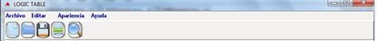

Para
crear un Nuevo Documento de Trabajo vasta con solo hacer click en
Archivo, este nos despliega un menú y elegimos la opción
Nuevo o sino precionamos las teclas Ctrl + N

Para mejor rapidez en la
creación de un nuevo archivo se da click en el primera imagen de
la barra de herrmientas, donde se encuentra el icono Nuevo.